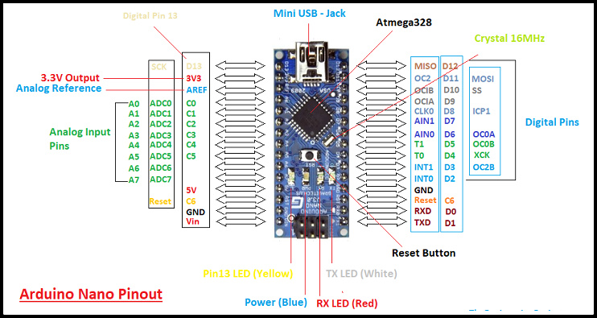
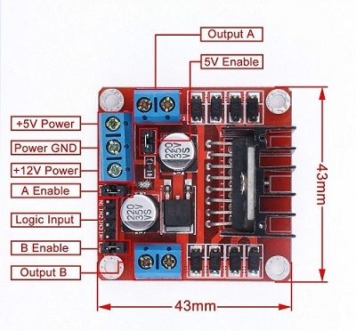
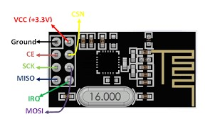
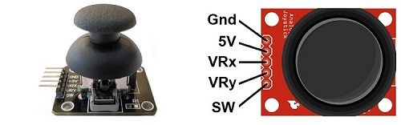
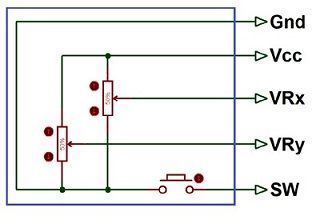
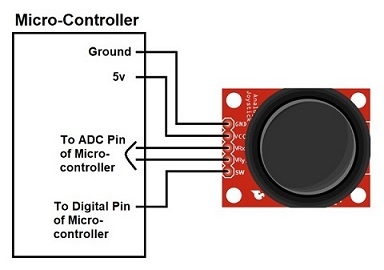
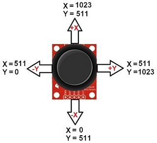
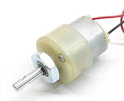
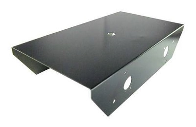
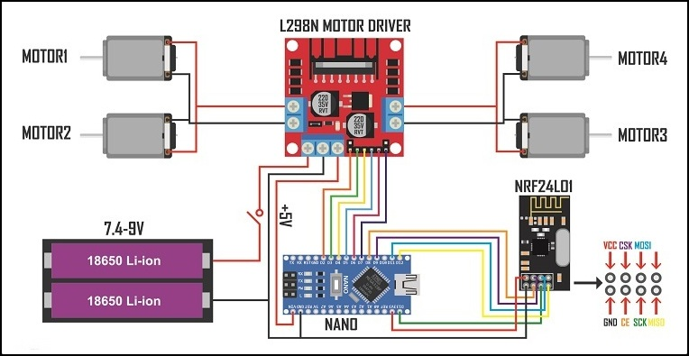

Hardware Requirement
Transmitter
Microcontroller: Arduino Nano, USB Cable
Motor driver: L298N module
Joystick: Joystick Module
Transmitter: nRF24L01 RF Modulee
External Power: Battery - 9V
Robot chassis
Receiver
Microcontroller: Arduino Nano, USB Cable
Motor driver: L298N module
Receiver: nRF24L01 RF Modulee
External Power: Battery - 9V
Motor: DC 3-6v BO Gear Motor With Plastic Tire Wheel
Robot chassis
Software Requirement
Arduino IDE
Hardware Specification
Arduino Nano
The Arduino Nano is a small, complete, and breadboard-friendly board based on the ATmega328P (Arduino Nano 3.x).
It has more or less the same functionality of the Arduino Duemilanove, but in a different package. It lacks only a DC power jack, and works with a Mini-B USB cable instead of a standard one.

Specification
Arduino Nano is a small, compatible, flexible and breadboard friendly Microcontroller board, developed by Arduino.cc in Italy, based on ATmega328p ( Arduino Nano V3.x) / Atmega168 ( Arduino Nano V3.x).
It comes with exactly the same functionality as in Arduino UNO but quite in small size.
It comes with an operating voltage of 5V, however, the input voltage can vary from 7 to 12V.
Arduino Nano Pinout contains 14 digital pins, 8 analog Pins, 2 Reset Pins & 6 Power Pins.
Each of these Digital & Analog Pins are assigned with multiple functions but their main function is to be configured as input or output.
Each of these Digital & Analog Pins are assigned with multiple functions but their main function is to be configured as input or output.
They are acted as input pins when they are interfaced with sensors, but if you are driving some load then use them as output.
Functions like pinMode() and digitalWrite() are used to control the operations of digital pins while analogRead() is used to control analog pins.
The analog pins come with a total resolution of 10bits which measure the value from zero to 5V.
Arduino Nano comes with a crystal oscillator of frequency 16 MHz. It is used to produce a clock of precise frequency using constant voltage.
There is one limitation using Arduino Nano i.e. it doesn’t come with DC power jack, means you can not supply external power source through a battery.
This board doesn’t use standard USB for connection with a computer, instead, it comes with Mini USB support.
Tiny size and breadboard friendly nature make this device an ideal choice for most of the applications where a size of the electronic components are of great concern.
Flash memory is 16KB or 32KB that all depends on the Atmega board i.e Atmega168 comes with 16KB of flash memory while Atmega328 comes with a flash memory of 32KB. Flash memory is used for storing code. The 2KB of memory out of total flash memory is used for a bootloader.
L298N Motor driver module
This dual bidirectional motor driver is based on the very popular L298 Dual H-Bridge Motor Driver IC. This module will allow you to easily and independently control two motors of up to 2A each in both directions.

Features
This module has a built-in 5v power supply, when the driving voltage is 7v-35v, this supply is suitable for power supply, DO NOT input voltage to +5v supply interface, however ledding out 5v for external use is available.
When ENA enable IN1 IN2 control OUT1 OUT2
When ENB enable IN3 IN4 control OUT3 OUT4
Specification
Double H bridge drive
Chip: L298N (ST NEW)
Logical voltage: 5V
Drive voltage: 5V-35V
Logical current: 0mA-36mA
Drive current: 2A (MAX single bridge)
Storage temperature: -20 to +135
Max power: 25W
Weight: 30g
Size: 43 x 43 x 27mm
nRF24L01 RF Module
nRF24L01 transceiver module uses the 2.4 GHz band and it can operate with baud rates from 250 kbps up to 2 Mbps. If used in open space and with lower baud rate its range can reach up to 100 meters. The module can use 125 different channels which gives a possibility to have a network of 125 independently working modems in one place. Each channel can have up to 6 addresses, or each unit can communicate with up to 6 other units at the same time.

The power consumption of this module is just around 12mA during transmission, which is even lower than a single LED. The operating voltage of the module is from 1.9 to 3.6V, but the good thing is that the other pins tolerate 5V logic, so we can easily connect it to an Arduino without using any logic level converters.
Three of these pins are for the SPI communication and they need to be connected to the SPI pins of the Arduino, but note that each Arduino board have different SPI pins. The pins CSN and CE can be connected to any digital pin of the Arduino board and they are used for setting the module in standby or active mode, as well as for switching between transmit or command mode. The last pin is an interrupt pin which doesn’t have to be used.
Joystick Module
Joystick is an input device. Analog joystick is sometimes called as Control Stick. It is used to control the pointer movement in 2-dimension axis.

Hardware Features
Two independent Potentiometer: one for each axis ( X and Y)
Auto return to center position
Compatible to interface with Arduino or with most microcontrollers
Technical Specifications
Operating Voltage: 5V
Internal Potentiometer value: 10k
2.54mm pin interface leads
Dimensions: 1.57 in x 1.02 in x 1.26 in (4.0 cm x 2.6 cm x 3.2 cm)
Operating temperature: 0 to 70 °C
Internal Structure
It consists of two Potentiometer, each for one axis (X and Y). Both 10k potentiometers are independent to move in their particular direction. SW (Switch) pin is connected to a push button internally.

Where Joysticks Are Used?
When we hear the word “Joystick” we think of Game controllers. If we talk about Electronics there are many useful applications of Joystick. These types of modules are mostly used in Arduino based DIY projects and Robot Control. As we know, the module gives analog output so it can be used for feeding the analog input based on direction or movement. It can also be connected to a movable camera to control its movement.
How to Use Joystick?
We can use a Joystick Module with Arduino, Raspberry Pi and any other Microcontrollers. We just have to connect the axis Pins VRx and VRy to the ADC Pins of the microcontroller. If you want to use the switch then connect it to the digital Pin of the Microcontroller. Follow the below block diagram to connect Joystick Module with Microcontroller.

After Interfacing Joystick Module with the Arduino, we will get the analog output. The output range is fixed for each direction. The below image shows, the value of analog output for X and Y axis based on the movement of Joystick Module in all four directions (+X, -X, +Y, -Y). You will also get some analog value when moving the knob diagonally.

DC Motor – 200RPM – 12Volts
These motors are simple DC Motors featuring gears for the shaft for obtaining the optimal performance characteristics. They are known as Center Shaft DC Geared Motors because their shaft extends through the center of their gear box assembly.

Features
The metal gears have better wear and tear properties
Gearbox is sealed and lubricated with lithium grease and requires no maintenance.
Although motor gives 200 RPM at 12V, motor runs smoothly from 4V to 12V and gives the wide range of RPM, and torque.
The shaft has a hole for better coupling
Operating Voltage(V): 12
Rated Torque(kg-cm): 1.5
Stall Torque(kg-cm): 5.4
Robot Chassis
You can use any Robot Chassis availble in the market to use in this project

Circuit Diagram ( Transmitter)

Circuit Diagram ( Receiver)
